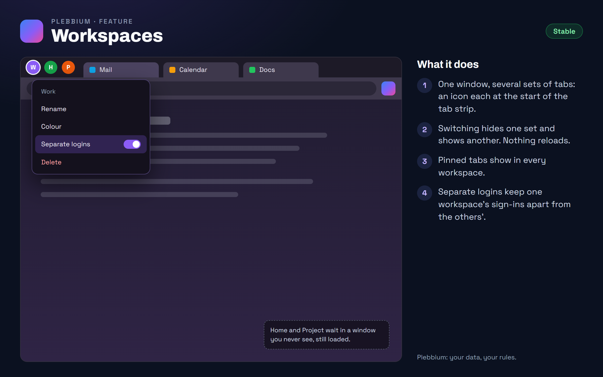

All features › Shipped › Workspaces
Workspaces
Stablesince 3604Named sets of tabs in one window, like Work, Home or a project, switched from icons at the start of the tab strip. Nothing reloads when you switch, and each workspace can have logins of its own.

How to use it
- Switch: click a workspace's icon at the start of the tab strip, or press Ctrl+Shift+1 to 9. With vertical tabs, type @ in the Everything bar.
- Make one: type new workspace Work in the Everything bar (Ctrl+Shift+A).
- Move a tab: right-click it › Move to workspace.
- Rename, recolour or delete: right-click the workspace's icon.
- Separate logins: right-click the icon › Separate logins. That workspace gets its own cookies, sign-ins and site data; turning it off asks whether to delete them.
When it arrived
156.0.8078.360418 Oct 2026 · Beta and Stable
Workspaces, with separate logins.
156.0.8078.3611Beta 21 Oct 2026 · Stable 22 Oct 2026 (3612)
Share a workspace: the same tabs for everyone in it, live.
156.0.8078.361222 Oct 2026 · Beta and Stable
Sharing a workspace turns its separate logins off, so everyone in it uses their normal logins.
Why it works this way
Nothing reloads
Chromium can't hide tabs, and teaching its tab strip to would be fought by every Chromium update. So the tabs of a workspace you leave move to a real window that is never shown, the same move as dragging a tab between windows: pages keep their place and what you typed.
Logins kept apart by Chromium itself
Separate logins use Chromium's own storage partitions, the mechanism behind its app windows: each workspace's cookies and sign-ins are kept apart by the browser, not by an add-on. Pinned tabs keep your normal logins, because they show in every workspace.
Horizontal tabs first
The icons live in the horizontal tab strip; with vertical tabs, the Everything bar's @ reaches every workspace instead.